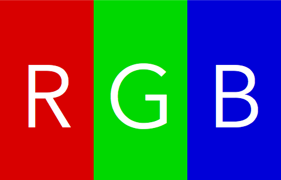
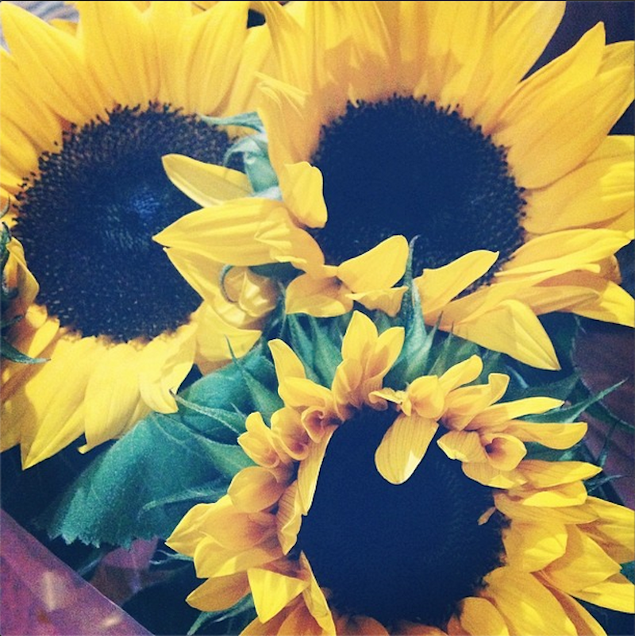

Al mezclar los colores primarios de la luz, que son rojo, verde y azul ( RGB por sus iniciales en inglés: Red, Green, Blue), estamos en presencia del sistema de color aditivo
En teoría todos los colores posibles pueden ser creados por la mezcla de estas tres luces de color y se les conoce como el espectro de color. En caso que ningún color de luz esté presente, se percibe el negro. Los colores primarios de luz tienen aplicación en los monitores de un ordenador, televisores, proyectores de vídeo y todos aquellos sistemas que utilizan combinaciones de materiales que fosforecen en el rojo, verde y azul.
Se debe tener en cuenta que sólo con unos colores «primarios» ficticios se pueden llegar a conseguir todos los colores posibles. Estos colores primarios son conceptos idealizados utilizados en modelos de color matemáticos que no representan las sensaciones de color reales o incluso los impulsos nerviosos reales o procesos cerebrales. En otras palabras, todos los colores «primarios» perfectos son completamente imaginarios, lo que implica que todos los colores primarios que se utilizan en las mezclas son incompletos o imperfectos.
